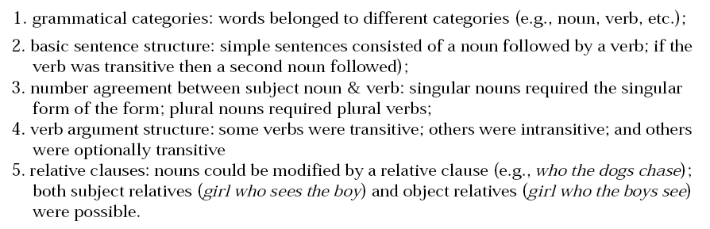
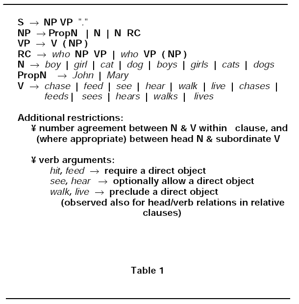
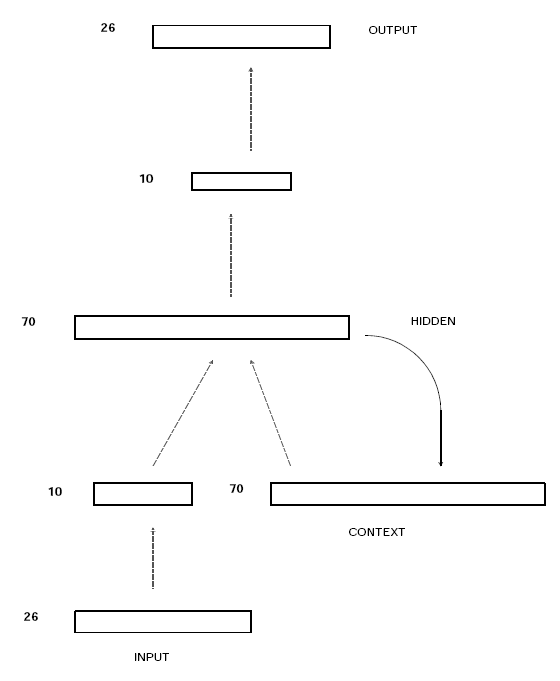
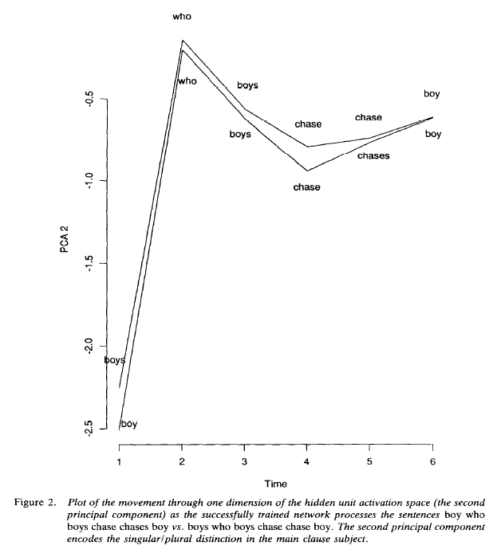
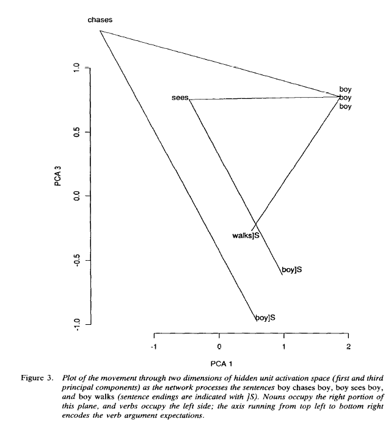
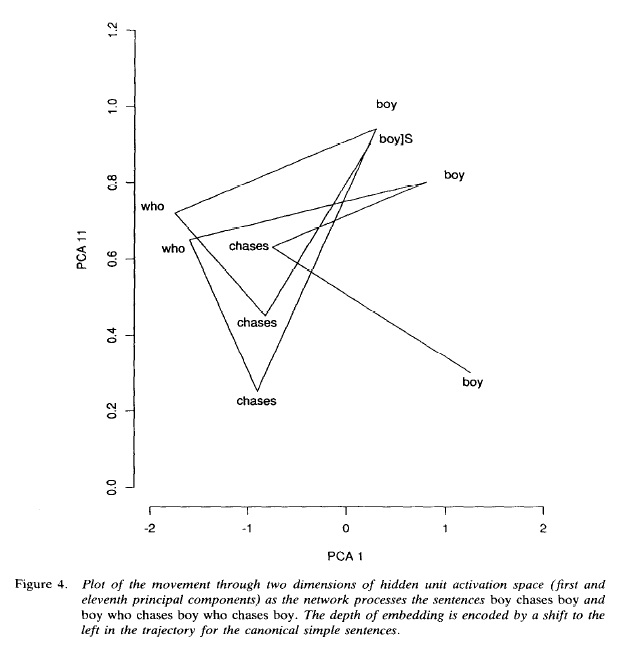
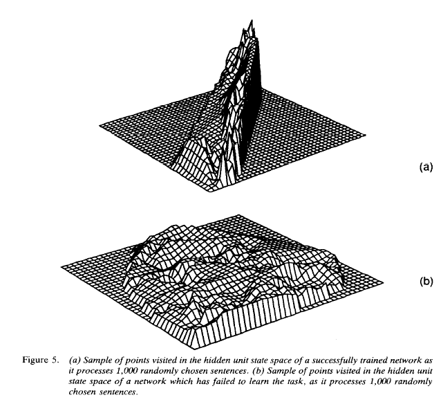
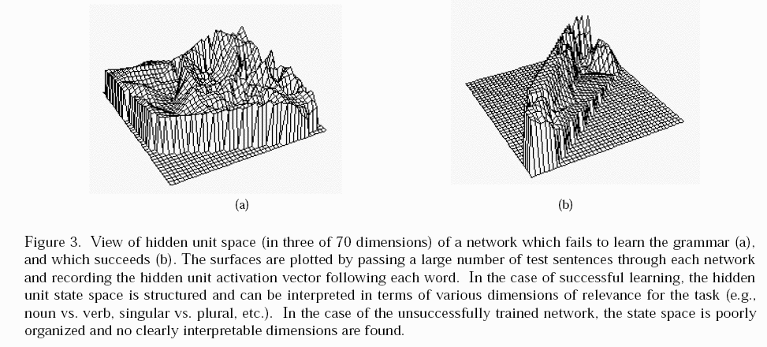

|
|||||||
| [ Home ] | [ Software ] | [ Curriculum ] | [ Hardware ] | [ Community ] | [ News ] | [ Publications ] | [ Search ] |
|
Pyro SRN ExperimentsThis section will explore a series of experiments originally designed and run by Jeffery Elman. First, we will generate a corpus of data of the form:
dog walks . dog who dogs who hit chase feeds . John chases . girl who dogs who feed live walks . Mary lives . boy sees . Mary hits . John hits . cat sees . girls who hear walk . boy who hits feeds . cat lives . girls who hear hit .   
ResultsExperiment #1: The network was trained on a corpus of sentences, and the it failed miserably. It learned some, but overall very poorly. Maybe Gold was right? Experiment #2: The network was trained according to a strict schedule, 5 epochs each:
This worked! However, it was very ad hoc and probably took some fiddling by a graduate student to get it to work correctly. In addition, the environment was manipulated in a manner very much unlike the way that children learn language; they are exposed to it in all its complexity from early on. Could it be learned without such a strict manipulative schedule? Experiment #3: The context bank of the network was randomly wiped out every 2 or 3 words with random patterns. The length between wipe-outs was slowly increased, until no wipe-outs were made. This worked!     
from pyrobot.brain.conx import SRN
import pyrobot.system.debug
#class mySRN(SRN):
# def preStep(self):
# print "pre step..."
network = SRN()
network.setSequenceType("random-continuous")
network.addLayer("input", 26)
network.addContextLayer("context", 70, "hidden")
network.addLayer("hid1", 10)
network.addLayer("hidden", 70)
network.addLayer("hid2", 10)
network.addLayer("output", 26)
network.connect("input", "hid1")
network.connect("hid1", "hidden")
network.connect("context", "hidden")
network.connect("hidden", "hid2")
network.connect("hid2", "output")
def makePattern(n):
retval = [0.0] * 26
retval[-n] = 1.0
return retval
network.predict("input", "output")
network.setPatterns( {".": makePattern(1),
"boy": makePattern(2),
"girl": makePattern(3),
"cat": makePattern(4),
"dog": makePattern(5),
"chase": makePattern(6),
"feed": makePattern(7),
"see": makePattern(8),
"hear": makePattern(9),
"walk": makePattern(10),
"live": makePattern(11),
"boys": makePattern(12),
"girls": makePattern(13),
"cats": makePattern(14),
"dogs": makePattern(15),
"chases": makePattern(16),
"feeds": makePattern(17),
"sees": makePattern(18),
"hears": makePattern(19),
"walks": makePattern(20),
"lives": makePattern(21),
"John": makePattern(22),
"Mary": makePattern(23),
"hit": makePattern(24),
"hits": makePattern(25),
"who": makePattern(26) } )
network.loadInputPatternsFromFile("elman100.dat", checkEven=0)
#network.setInteractive(1)
network.setReportRate(1)
network.train()
[
Pyro Modules Table of Contents
Modules
Additional ResourcesReference: PyroSiteNotes
| ||||||||||||||||||||||
| [ Home ] | [ Software ] | [ Curriculum ] | [ Hardware ] | [ Community ] | [ News ] | [ Publications ] | [ Search ] |
 View Wiki Source | Edit Wiki Source | Mail Webmaster
View Wiki Source | Edit Wiki Source | Mail Webmaster | |||||||